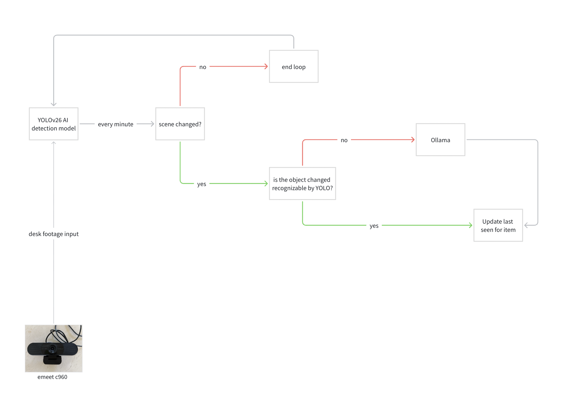
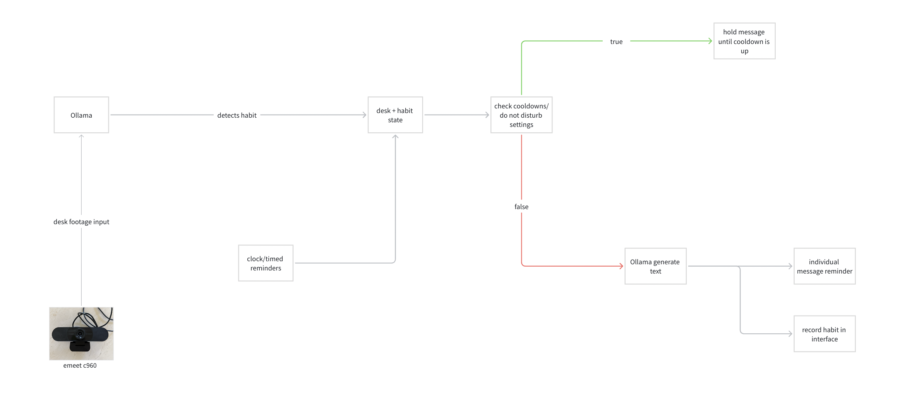
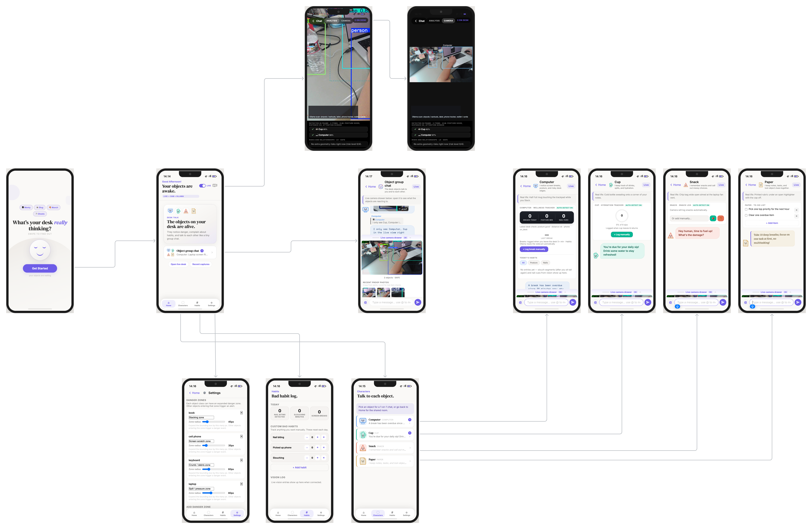

01
Hazards near your computer
Water or risky items too close to the machine, pets on the desk, or strangers and clutter crowding your screen zone — you get a clear heads-up so you can react before damage or distraction.
Desk intelligence · Chat-first
One camera. One calm interface. Desk Talk watches your workspace and turns what it sees into small, timely reminders — so spills, clutter, and lost items never sneak up on you.
Main function
You must have spilled a beverage on your desk before. Most people just say, "Oh well, I will be more careful next time," but no one really takes any meaningful action or finds a solution to these problems. Every day, we spend a lot of time around the desk, longer than any other place in the house. On the desk, we have computers, cups, keys, books, and daily objects. But these objects aren't being actively maintained or kept organized, which can lead to chaos like lost keys and water spills, interrupting the tasks you are doing. The desk is out of control without you realizing it. But what if the objects on your desk were alive? What if they could observe your daily habits and activities around the desk? They could talk to you, create conversations, and help you manage your desk.
Desk Talk uses a camera and a chat-style interface to track what is on your desk and turn everyday objects into gentle reminders that keep you organized and focused. It can warn you about spills or clutter, remind you to take breaks and stay on track, and help you find items you have misplaced. It is not just a system that reminds you to do stuff; it is a desktop agent system that turns everyday desk objects into living companions with memory.
Three scenes
Each scene matches a real desk moment. The illustrations below are the same storyboard style the product uses to explain behavior — clear, minimal, and focused on the object that matters.
Water or risky items too close to the machine, pets on the desk, or strangers and clutter crowding your screen zone — you get a clear heads-up so you can react before damage or distraction.

Headphones, phone, keys, and other small items appear on your desk — Desk Talk helps you notice what is present, what moved, and what might walk away so your essentials stay organized.

Posture checks, sitting too close to the screen, drinking water, and even watering plants — light nudges tied to how you actually use the desk, not generic alarms.
Under the hood
Three pipelines run behind the chat: one watches for physical risk on the desk, one keeps a light memory of where your things were, and one turns habits and quiet hours into messages you can actually use.



Interaction
Alerts read like messages from your desk — short, specific, and easy to act on. The three scenarios behind the product line up as columns; each row is a parallel example of what can surface in chat or on the live desk view.
Spreadsheet-style layout — scroll sideways on small screens.
| Risk detection | Lost objects | Reminders & habits |
|---|---|---|
|
|
|
|
|
|
|
|
|
|
After a focused block you might still see compact recap chips — mixing all three columns:
|
||
Why it matters
Most tools shout at you. Desk Talk is built around the idea that your desk already tells a story — objects, distance, light habits. When that story is translated into a calm chat, you get fewer surprises, less damage, and a workspace that feels intentional instead of chaotic. It is the same care you see in premium hardware brands: simple on the surface, serious underneath.
Under the hood: computer vision for what is on the desk, lightweight rules for risk and presence, and a conversational layer so every alert feels human-sized — not a dashboard, not a siren.
Product map
The sitemap shows the main user paths: starting from the home screen, moving into live camera evidence, object chats, settings, habits, captures, and individual character conversations.
